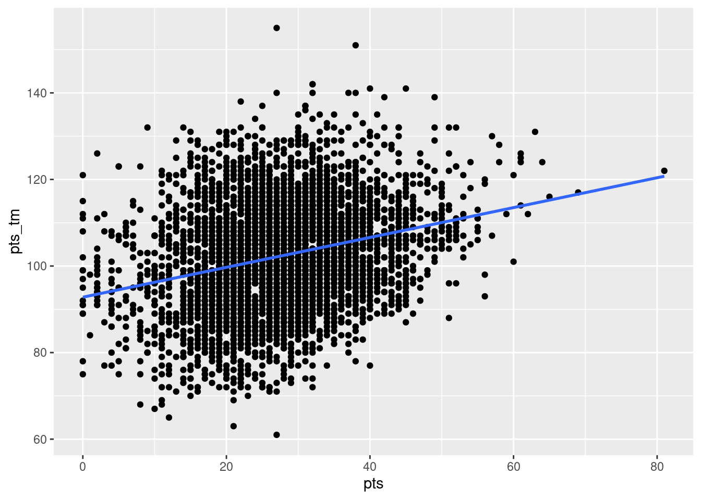

library(ISDSdatasets)
library(tidyverse)
library(moderndive)
library(lubridate)
library(patchwork)Appendix B — Exercise solutions
B.1 Chapter 1
Exercise 1.1 b. Quarto Document
Exercise 1.3 a. TRUE
Exercise 1.5 b. FALSE
Exercise 1.7 b. Data on a flight
z <- 12*31
add_on <- 12
z + add_on[1] 384head(titanic)# A tibble: 6 × 11
PassengerId Survived Pclass Name Sex Age SibSp Parch Ticket Fare Embar…¹
<dbl> <dbl> <dbl> <chr> <chr> <dbl> <dbl> <dbl> <chr> <dbl> <chr>
1 892 0 3 Kell… male 34.5 0 0 330911 7.83 Q
2 893 1 3 Wilk… fema… 47 1 0 363272 7 S
3 894 0 2 Myle… male 62 0 0 240276 9.69 Q
4 895 0 3 Wirz… male 27 0 0 315154 8.66 S
5 896 1 3 Hirv… fema… 22 1 1 31012… 12.3 S
6 897 0 3 Sven… male 14 0 0 7538 9.22 S
# … with abbreviated variable name ¹EmbarkedThe head() function shows the first 6 rows of the dataset. Based on this, I expect the tail() function to show the last 6 rows of the dataset.
unique(titanic$Embarked)[1] "Q" "S" "C"There are 3 unique ports of embarkation: Q, S, C (Queenstown, Southampton, Cherbourg).
B.2 Chapter 2
Exercise 2.1 b. geom_line(), c. geom_col(), e. geom_histogram()
Exercise 2.3 b. changing the transparency, e. jittering the points
Exercise 2.5 b. geom_col()
Exercise 2.7 b. linegraph
Exercise 2.9 d. boxplot
Exercise 2.11 The histogram is unimodal and left skewed.
ggplot(
covid_sub,
aes(x = date, y = new_confirmed, color = state_abbr)
) +
geom_line()
Florida has significantly more covid cases than Illinois in the months of July and August 2021. The spikes to 0 could indicate testing did not occur on those days. Illinois has a positive “fairly linear” trend. Florida has a nonlinear trend where cases are increasing until around August 15th, at which point cases start to decrease.
ggplot(nba, aes(x = ft_percent, y = fg_percent)) +
geom_jitter(alpha=0.1)
The relationship between the field goal percentage and free throw percentage seems to have no association. This means that whether a player made all of their free throws or only 50% of their free throws, it will not impact their shooting during the game (field goal percent). If we draw a circle around the points it is fairly horizontal (indicating no positive or negative trend) and a large oval.
ggplot(
covid_sub,
aes(x = date, y = new_confirmed, color = state_abbr)
) +
geom_line() +
theme_minimal() +
labs(x = NULL) +
theme(axis.text.x = element_text(angle = 45, hjust = 1))
B.3 Chapter 3
Exercise 3.1 c) x %>% c() %>% b() %>% a()
Exercise 3.3 c. 1 row and 4 columns
Exercise 3.5 a. increase
Exercise 3.7 b. \(mean < median\)
Exercise 3.9 d.
Exercise 3.11 a. e. (there is no variable called passenger)
nba %>%
group_by(player) %>%
mutate(spread = pts_tm - pts_opp ) %>%
ungroup() %>%
slice_max(spread) %>%
select(player, pts_tm, pts_opp, spread)# A tibble: 1 × 4
player pts_tm pts_opp spread
<chr> <dbl> <dbl> <dbl>
1 Kobe Bryant 112 57 55# Alternate code
nba_spread <- nba %>%
group_by(player) %>%
mutate(spread = pts_tm - pts_opp ) %>%
select(player, pts_tm, pts_opp, spread)
nba_spread %>% arrange(desc(spread))# A tibble: 4,747 × 4
# Groups: player [3]
player pts_tm pts_opp spread
<chr> <dbl> <dbl> <dbl>
1 Kobe Bryant 112 57 55
2 Michael Jordan 129 82 47
3 Kobe Bryant 113 67 46
4 Kobe Bryant 113 67 46
5 Michael Jordan 114 69 45
6 Michael Jordan 140 96 44
7 LeBron James 130 86 44
8 Michael Jordan 123 81 42
9 Michael Jordan 111 69 42
10 Michael Jordan 96 54 42
# … with 4,737 more rowsKobe Bryant had the largest win spread, winning the game by 55 points.
covid_join <- covid_states %>%
group_by(location_key, state) %>%
summarize(total_new_confirmed=sum(new_confirmed, na.rm=TRUE),
total_new_deceased=sum(new_deceased, na.rm=TRUE),
total_new_recovered=sum(new_recovered, na.rm=TRUE),
total_new_tested=sum(new_tested, na.rm=TRUE))
covid_joined <- covid_join %>%
inner_join(covid_dem, by= "location_key")
covid_joined# A tibble: 59 × 18
# Groups: location_key [59]
locat…¹ state total…² total…³ total…⁴ total…⁵ popul…⁶ popul…⁷ popul…⁸ popul…⁹
<chr> <chr> <dbl> <dbl> <dbl> <dbl> <dbl> <dbl> <dbl> <dbl>
1 US_AK Alas… 2.80e5 1316 7136 4.11e6 7.33e5 4.25e5 3.92e5 115198
2 US_AL Alab… 1.47e6 20047 287739 2.32e6 5.02e6 2.51e6 2.68e6 621981
3 US_AR Arka… 9.24e5 11861 315506 2.74e6 3.01e6 1.59e6 1.65e6 411655
4 US_AS Amer… 8.04e3 33 0 2.14e3 4.97e4 NA NA NA
5 US_AZ Ariz… 2.24e6 30982 0 7.91e6 7.15e6 4.03e6 4.09e6 1080975
6 US_CA Cali… 1.02e7 93827 0 1.82e8 3.95e7 2.05e7 2.09e7 5297960
7 US_CA_… Cali… 2.21e5 0 0 4.40e6 8.74e5 4.22e5 4.14e5 61427
8 US_CO Colo… 1.63e6 13235 0 6.42e6 5.77e6 2.98e6 2.98e6 782811
9 US_CT Conn… 8.69e5 11180 5454 6.52e6 3.61e6 1.82e6 1.93e6 416756
10 US_DC Dist… 1.37e5 1377 34968 1.26e6 6.90e5 2.97e5 3.35e5 58373
# … with 49 more rows, 8 more variables: population_age_10_19 <dbl>,
# population_age_20_29 <dbl>, population_age_30_39 <dbl>,
# population_age_40_49 <dbl>, population_age_50_59 <dbl>,
# population_age_60_69 <dbl>, population_age_70_79 <dbl>,
# population_age_80_and_older <dbl>, and abbreviated variable names
# ¹location_key, ²total_new_confirmed, ³total_new_deceased,
# ⁴total_new_recovered, ⁵total_new_tested, ⁶population, ⁷population_male, …covid_pop <- covid_states %>%
filter(state_abbr %in% c("CA", "TX", "FL", "NY"))covid_confirmed <- covid_pop %>%
filter(date<="2021-12-31", date>="2021-01-01") %>%
mutate(week = week(date)) %>%
group_by(week, state) %>%
summarize(total_confirmed = sum(new_confirmed))
ggplot(data=covid_confirmed,
aes(x=week, y=total_confirmed, color=state)) +
geom_line()
The linegraph shows that the states had the similar pattern overall. The peaks seem to correspond to weeks of holidays and school starting where people are gathering.
B.4 Chapter 4
Under Construction
Currently working on exercise solutions.
B.5 Chapter 5
Exercise 5.1 c) -0.7
Exercise 5.3 b) Between -1 and 0
Exercise 5.5 b) predictor variable & c) outcome variable & e) dependent variable
Exercise 5.7 d) For every increase of 1 unit in x, there is an associated increase of, on average, 3.86 units of y.
Exercise 5.9 b) FALSE
Exercise 5.11 d) No, the positive correlation does not necessarily imply causation.
model_pts <- lm(pts_tm ~ pts, data = nba)
summary(model_pts)
Call:
lm(formula = pts_tm ~ pts, data = nba)
Residuals:
Min 1Q Median 3Q Max
-41.117 -8.288 -0.497 7.813 52.883
Coefficients:
Estimate Std. Error t value Pr(>|t|)
(Intercept) 92.80431 0.53661 172.95 <2e-16 ***
pts 0.34493 0.01844 18.71 <2e-16 ***
---
Signif. codes: 0 '***' 0.001 '**' 0.01 '*' 0.05 '.' 0.1 ' ' 1
Residual standard error: 11.84 on 4391 degrees of freedom
(354 observations deleted due to missingness)
Multiple R-squared: 0.07382, Adjusted R-squared: 0.0736
F-statistic: 350 on 1 and 4391 DF, p-value: < 2.2e-16a) 0.272
nba %>%
summarize(cor = cor(pts_tm, pts, use = "complete.obs"))# A tibble: 1 × 1
cor
<dbl>
1 0.272b)
ggplot(nba, aes(x = pts, y = pts_tm)) +
geom_point() +
geom_smooth(method = "lm", se = FALSE)
c) \[\widehat{pts tm} = 92.80 + 0.345*pts\] d)
Intercept: When the individual player scored 0 points in a game, we expect their team to score 92.80 points.
Slope:: For every 1 additional point the individual player scores, we expect the number of total points the team scores to increase by 0.345.
e) We predict the team will have a total of 110 points.
92.80 + 0.345*50[1] 110.05# coefficients
summary(model_pts)$coefficients Estimate Std. Error t value Pr(>|t|)
(Intercept) 92.8043115 0.53660781 172.94626 0.000000e+00
pts 0.3449292 0.01843843 18.70708 3.387935e-75# or
model_pts$coefficients(Intercept) pts
92.8043115 0.3449292 # r.squared
summary(model_pts)$r.squared[1] 0.07381528B.6 Chapter 6
Exercise 6.1 c. The parallel slopes model. Since two models are very similar, the additional complexity of the interaction model isn’t necessary
Exercise 6.3 b. False
Exercise 6.5 a. Splitting up your data can result in unequal balance in representation of some groups compared to others. & d. Splitting up your data by a confounding variable can allow you to see trends in the data that were hidden in the aggregated version of the data.
covid_merge <- covid_states %>%
left_join(covid_dem)
covid_pred2 <- lm(new_confirmed ~ population + new_tested,
data = covid_merge)
summary(covid_pred2)$coefficients Estimate Std. Error t value Pr(>|t|)
(Intercept) 1.704474e+02 4.211070e+01 4.047604 5.191359e-05
population 3.711377e-05 5.333525e-06 6.958581 3.529293e-12
new_tested 5.272425e-02 8.645625e-04 60.983732 0.000000e+00model_pts_int <- lm(pts_tm ~ pts*location,
data = nba)
summary(model_pts_int)$coefficients Estimate Std. Error t value Pr(>|t|)
(Intercept) 88.5705162 0.75138008 117.877115 0.000000e+00
pts 0.4305969 0.02579626 16.692224 1.072315e-60
locationHome 8.3693493 1.05745823 7.914591 3.117298e-15
pts:locationHome -0.1688308 0.03633496 -4.646510 3.474887e-06ggplot(nba, aes(x = pts, y = pts_tm, color = location)) +
geom_point() +
geom_smooth(se = FALSE)
b_0 When the star player scores 0 points and the game is away, the team is predicted to score 88.57 points.
b_1 For every additional point the star player scores, the associated expected increase in team points is 0.431 for away games.
b_2 When the star player scores 0 points, the team is expected to score on average 8.37 more points when the game is home compared to when the game is away.
b_3 For every additional point the star player scores, the associated expected increase in team points will be 0.169 less for home games than away games.
# parallel slopes
mean(model_pts_parallel$residuals^2)[1] 136.5566# interaction
mean(model_pts_int$residuals^2)[1] 135.8881The MSE of the parallel slopes is 136.6 and the MSE of the interaction is 135.9. Since the MSE for the interaction model is smaller it appears to be slightly better.
Many different possible answers
model_better <- lm(pts_tm ~ pts_opp + pts, data = nba)
mean(model_better$residuals^2)[1] 116.9488This model which uses the opponents points and star player points has an MSE of 116.9 which is better.
B.7 Chapter 7
Exercise 7.1 a) There is a non-zero probability of being selected into the treatment or control group for every unit & c) A random process is used for selection & e) A random process is used for administration of the treatments
Exercise 7.3 b) False
Exercise 7.5 a) Try to ensure that treatment and control groups are as similar as possible on all variables related to treatment assignment & c) Look for variables you can use to control for confounding & d) State your assumptions and limitations
Exercise 7.7 b) video games are only correlated with violent behavior, because this would be an observational study
Exercise 7.9 d) No, because the treatment and control groups were not randomized
Exercise 7.11 No the administration cannot conclude the after-school program caused student improvement. While this was a randomized selection of a subset of students we cannot generalize to all students because all students were not considered. Also, this was a before and after study where it is likely the material from the fall semester is likely different from the material in the spring semester. Perhaps these students were just better at the topics covered in the spring.
B.8 Chapter 8
Exercise 8.1 d) a population parameter
Exercise 8.3 all of them (a, b, c, d)
Exercise 8.5 d) Systematic sampling
Exercise 8.7 c) Cluster sampling (with unequal probability) choosing towns is based on random cluster selection
Exercise 8.9 c) An observational study with random sampling but no random assignment
Exercise 8.11 population: US citizens
parameter: proportion (most likely a Yes or No question)
undercoverage: citizens that do not own a house, if there are multiple citizens in one household only one person will receive the survey.
B.9 Chapter 9
Exercise 9.1 b) unimodal & h) symmetric
?exr-ch09-c03 c) 1 - pnorm(q = 60, mean = 64, sd = 3, lower.tail = FALSE)
?exr-ch09-c05 a) apple
The sampling distribution of the sample mean and the sampling distribution of the difference in sample means both follow the T distribution
The regression slope and regression intercept both follow the T distribution
Exercise 9.9 b) False
- False
?exr-ch09-c13
99.7% (3 standard deviations)
pnorm(q = 13, mean = 10.5, sd = 1.5,
lower.tail = FALSE)[1] 0.047790354.78% of men have a shoe size larger than 13.
pnorm(q = 12, mean = 10.5, sd = 1.5) - pnorm(q = 10, mean = 10.5, sd = 1.5)[1] 0.471903447.19% of males have a shoe size between 10 and 12. So assuming this is a random male where everyone has an equal chance of selection there is a 47.19% chance.
qnorm(p = 0.6, mean = 10.5, sd = 1.5, lower.tail = FALSE)[1] 10.11998His shoe size is 10.12 (which is not an actual shoe size so his shoe size would be 10)
?exr-ch09-c15
weather <- tibble(
daily_weather = c(rep("sunny",476),
rep("cloudy",558),
rep("partly cloudy",487),
rep("rainy",312),
rep("thuderstorms",28),
rep("snowy",329))
)set.seed(52)
samples_1 <- weather %>%
rep_sample_n(size = 30, reps = 50)
samples_2 <- weather %>%
rep_sample_n(size = 30, reps = 5000)
samples_3 <- weather %>%
rep_sample_n(size = 50, reps = 5000)summary_1 <- samples_1 %>%
group_by(replicate) %>%
summarize(sunny = sum(daily_weather == "sunny"),
prop = sunny/n())
summary_2 <- samples_2 %>%
group_by(replicate) %>%
summarize(sunny = sum(daily_weather == "sunny"),
prop = sunny/n())
summary_3 <- samples_3 %>%
group_by(replicate) %>%
summarize(sunny = sum(daily_weather == "sunny"),
prop = sunny/n())plot_1 <- ggplot(summary_1, aes(x = prop)) +
geom_histogram(color = "white", bins = 5)
plot_2 <- ggplot(summary_2, aes(x = prop)) +
geom_histogram(color = "white", bins = 17)
plot_3 <- ggplot(summary_3, aes(x = prop)) +
geom_histogram(color = "white", bins = 22)
plot_1 + plot_2 + plot_3
B.10 Chapter 10
Exercise 10.1 Estimate \(\\pm\) Critical Value*SE(Estimate)
Exercise 10.2 a) We are 90% confident that the true mean is within any given 90% confidence interval
- Approximately 90% of confidence intervals contain the true mean
Exercise 10.3 b) False
B.11 Chapter 11
Under Construction
Currently working on exercise solutions.
B.12 Chapter 12
Exercise 12.1 a) Type I Error
Exercise 12.2 d) No, one type of error will be minimized at the expense of the other type
Exercise 12.3 b) False
Exercise 12.4 a) True
Exercise 12.5 a) \(\alpha\) b) \(n\)
Exercise 12.6 b) Type II Error